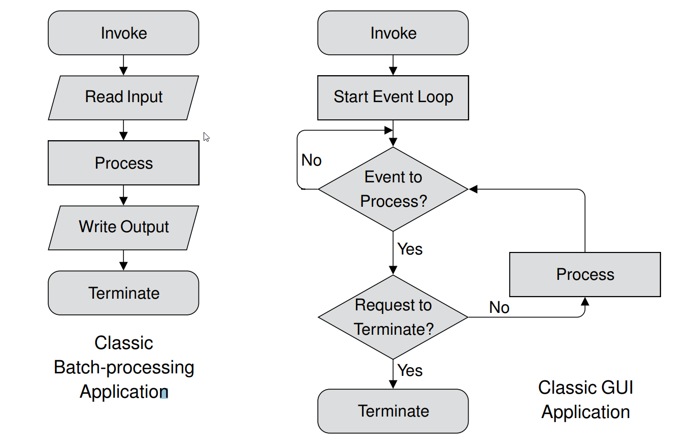

<!doctype html>
<html lang="en">
<head>
    <meta charset="utf-8">
<title>
2017 Spring 機械設計工程系網際內容管理
</title>
    <meta name="description" content="A framework for easily creating beautiful presentations using HTML">
    <meta name="author" content="Hakim El Hattab">
    
    <meta name="apple-mobile-web-app-capable" content="yes">
    <meta name="apple-mobile-web-app-status-bar-style" content="black-translucent">
    
    <meta name="viewport" content="width=device-width, initial-scale=1.0, maximum-scale=1.0, user-scalable=no">
    
    <link rel="stylesheet" href="data/reveal/reveal.css">
    <link rel="stylesheet" href="data/reveal/black.css" id="theme">
    
    <!-- Theme used for syntax highlighting of code -->
    <link rel="stylesheet" href="data/reveal/zenburn.css">

    <!-- Printing and PDF exports -->
    <script>
        var link = document.createElement( 'link' );
        link.rel = 'stylesheet';
        link.type = 'text/css';
        link.href = window.location.search.match( /print-pdf/gi ) ? 'data/reveal/pdf.css' : 'data/reveal/paper.css';
        document.getElementsByTagName( 'head' )[0].appendChild( link );
    </script>

    <!--[if lt IE 9]>
    <script src="data/reveal/html5shiv.js"></script>
    <![endif]-->
</head>

<body>
<div class="reveal">
<!-- Any section element inside of this container is displayed as a slide -->
<div class="slides">
<section data-markdown>
    <script type="text/template">
## 2017Fall CADP 與 CP

### 虎科大機械設計工程系

<small>
Created by [KMOLab](http://kmolab.github.io/blog/)
</small>

[CADP 與 CP 課程網誌](blog/index.html)


    </script>
</section>


						
<section data-markdown>
    <script type="text/template">
# W1-W3

* 準備筆記本、隨身碟與耳機
* 充分了解隨身系統的啟動關機與使用
* 先在近端運作, 然後同桌電腦, 最後區網與雲端
* 了解機械設計本質, 六種表達與如何培養創造力
* 要怎麼收穫, 就那麼栽, 沒有捷徑, 真的沒有捷徑
* 每天紀錄, 自己如何過完人生中這個寶貴的一天

    </script>
</section>


						
<section data-markdown>
    <script type="text/template">
# 隨身碟內容介紹

* Windows 64 位元電腦專用
* 可以在電腦間遊走, 擁有統一的近端操作環境
* USB 碟遊走各電腦, 要小心散播病毒
* 玩線上遊戲, 但不要玩到 USB 中毒
* 打開 c:\mde\python2017fall_36 目錄, 從 start.bat 開始
* Python, C/C++, Fossil SCM, Git, Solvespace, V-rep, Blender
* 夠您玩兩年了

    </script>
</section>


						
<section>
    <section data-markdown>
        <script type="text/template">
    # 計算機程式學習順序

    * 先學 Python3, 兼學 C/C++
    * 了解 WWW 網頁與伺服器架構, 學 Javascript
    * 若想再寫手機程式或大型程式, 學 Java
    * 其他, 例如: Go, Ruby, Scala, R, Matlab, Mathematica 也都不錯
    * 程式就是特定格式的流程,  任何人都必須接觸了解運用
    * 計算機程式是與電腦及網路溝通的重要工具, 工程師必備
    * 不要再問: 我到底需不需要精熟計算機程式與網路

        </script>
    </section>


    						
    <section data-markdown>
        <script type="text/template">
    # 如何學好 Python3

    * 上課專心聽, 用心動手練習, 發揮自學力、執行力與想像力
    * 工程師可以利用程式, 以協同模式, 預先模擬設計許多產品
    * 先學會如何使用 Fossil SCM, 再了解 Pelican 與 Reveal.js
    * 利用 Leo Editor 編輯投影片與網誌, 保留學習心得
    * 不斷寫, 再不斷寫, 電腦與網路就會是您的好夥伴

        </script>
    </section>


    						
    <section data-markdown>
        <script type="text/template">
    # 如何學習 CAD

    * CAD 為 Computer Aided Design
    * 尤其是 Mechanical Computer Aided Design
    * 2D/3D 繪圖是電腦輔助設計的表達方式之一
    * 口語、文字、 2D、 3D、 數學與實作表達, 都很重要
    * 2D/3D 繪圖採用 Solvespace 與 Onshape
    * 熟悉近端與雲端 CAD 後, 可以再用其他  MCAD 工具
    * 其他工具包括: SolidWorks, Inventor, Creo Parametric 等

        </script>
    </section>


    						
    <section data-markdown>
        <script type="text/template">
    # 電腦輔助設計實習

    * 利用近端與雲端工具繪製 Nutcraker 曲柄滑塊機構
    * 在近端與雲端模擬機構運動, 進行防止干涉運算設計
    * 了解如何將 Nutcracker 零件轉入 V-rep 進行模擬
    * 利用 Python 程式跨網路操控 V-rep 中的 Nutcracker
    * 重複上述步驟, 各組利用連桿與滑塊機構設計循環運動系統
    * 利用  TinkerCAD了解 Arduino 實體與網際馬達控制
    * 各小組完成一項機電資循環運動系統設計與模擬
    * 各大組將評比後的最終設計, 進行實體列印組裝與展示

        </script>
    </section>


    						
    <section data-markdown>
        <script type="text/template">
    # 機電資整合教學

    * INFOrmation Technology
    * MECHAnical Design and Manufacturing Engineering
    * Electrical and ElecTRONIC Engineering 
    * InfoMechaTronic Engr. 機電資整合工程
    * 以 Robotics 的設計製造流程導入
    * 機器人 - 可程式化之多功能機械

        </script>
    </section>


    						
    <section data-markdown>
        <script type="text/template">
    # 機電資整合工具

    * 程式語言: Python + C/Cpp + Javascript
    * 電腦輔助設計: Solvespace + OnShape
    * 模擬分析: V-rep + Blender + HyperWorks
    * 組態管理: Fossil SCM + Github + Bitbucket
    * 教學影片: Vimeo + Youtube
    * 內容管理與展示: Leo Editor + Pelican Blog + Reveal.js

        </script>
    </section>


    						
</section>


						
<section>
    <section data-markdown>
        <script type="text/template">
    # 開啟隨身系統

    * 點擊 c:\mde\python2017fall_36 目錄中的 start.bat 開啟
    * 產生與 c:\mde\python2017fall_36\data 對應的 y:\ 
    * 產生專屬的 Dos 指令區與 SciTE 編輯器
    * 用瀏覽器, 以 pyqt5 example calculator 關鍵字找 calculator.py
    * 將 calculator.py 內容放入 SciTE, 在 c:\tmp 存為 .py 後按 F5 
    * 接著用 ansi c hello word 關鍵字找 .c 程式, 放入 SciTE, 存為 .c
    * 存檔後, 按下 F5 執行
    * SciTE 可以採解譯模式, 執行 Python3 與 ANSI C 程式

        </script>
    </section>


    						
    <section data-markdown>
        <script type="text/template">
    # 了解 Fossil SCM

    * 利用 Fossil SCM 關鍵字查詢, 十分鐘後, 請回答下列問題
    * 何謂 SCM? 何謂 Fossil SCM?
    * 如何使用 Fossil SCM?
    * 用與不用 SCM, 有沒有差別?
    * 機械設計工程師為何需要使用 Fossil SCM?


        </script>
    </section>


    						
    <section data-markdown>
        <script type="text/template">
    # SCM 功能

    * SCM 是軟體組成元件配置與狀態的管理
    * 關心要納入那些元件? 如何納入? 元件間如何組合運作?
    * 關心目前的狀態如何? 功能是否滿足需求?
    * 成員是否團隊合作? 是否創造出協同效益?
    * 當狀態產生問題或缺陷, 如何追蹤? 如何改善?
    * 成員是否依照規劃, 提供完整的文件、規格與手冊?


        </script>
    </section>


    						
    <section data-markdown>
        <script type="text/template">
    # SCM 目標 (1/2)

    * 辨識 (identification) - 需求、流程與環境的辨識
    * 控制 (control) - 批准或拒絕內容的變更
    * 會計 (accounting) -  完整保存每個階段所進行的變更
    * 審核 (auditing) - 確認建立完整的文件, 需求, 架構, 規範與使用者手冊
    * 構建管理 (build) - 管理過程中所需的各類工具


        </script>
    </section>


    						
    <section data-markdown>
        <script type="text/template">
    # SCM 目標 (2/2)

    * 流程管理 (process) - 確認過程融入組織的發展要求
    * 環境管理 (environment) - 提供託管內容所需的軟體與硬體
    * 團隊合作 (teamwork) - 促進團隊互動協同
    * 缺陷追踪 (defect tracking) - 可追溯每個缺陷的源頭


        </script>
    </section>


    						
    <section data-markdown>
        <script type="text/template">
    # SCM 的目標

    * 以協同模式進行機電資整合設計
    * 建構詳細的履歷 (註記時間、變更與建立者)
    * 完整呈現並管理各階段內容配置與狀態
    * 達到資源高效運用, 最佳化軟體及機械設計開發過程

        </script>
    </section>


    						
</section>


						
<section>
    <section data-markdown>
        <script type="text/template">
    # 循序與 GUI 流程差異

    </img>

        </script>
    </section>


    						
    <section data-markdown>
        <script type="text/template">
    # show() 與 exec()

    * show() 納入圖形介面, 顯示部件畫面
    * exec() 方法執行後, 截斷同層與上層視窗, 直到關閉


        </script>
    </section>


    						
</section>


						
<section>
    <section data-markdown>
        <script type="text/template">
    # 課程如何評分

    * 出席: 20% (if 全勤: 提問與答題內容*平時表現)
    * 平時表現: 30% (隨身碟與倉儲內容 + 每堂筆記內容)
    * 驗收考試: 30% (三階段現場錄製操作與心得影片-註記時間與錄製人員學號)
    * 驗收簡報: 20% (驗收週各組簡報, 各學員簡報, 根據驗收考試與簡報內容自評與互評)

        </script>
    </section>


    						
    <section data-markdown>
        <script type="text/template">
    # 依照學號與座位分組

    * 分組目的在互助合作, 實習如何協同設計
    * 全班依學號入座, 每六人一小組, 每三小組為一大組
    * 每班提供一台廣域伺服器, 配合與個人的隨身碟存放資料
    * 每一個階段的練習, 都要拍成練習影片, 上傳 Youtube 與 Vimeo
    * 影片標題必須冠上校名、系名、課程名與學號


        </script>
    </section>


    						
</section>


						
<section data-markdown>
    <script type="text/template">
# 投影片快捷鍵

* 利用箭頭上下前後換頁
* 按 f 鍵進入全螢幕模式 (full screen)
* 按 s 鍵可以顯示投影片筆記 (show)
* 按 o 鍵可以切換單張或全域檢視 (overview)
* 按 b 或 . 鍵可以切換螢幕黑屏 (black)
* 按 Esc 可以退出全螢幕或全域檢視 (Escape)

    </script>
</section>


						
<section>
<section data-markdown>
    <script type="text/template">
<!-- 請注意, @others 不可以內縮 -->
# 數學符號與方程式

Inline math equations go in like so: $\omega = d\phi / dt$. Display
math should get its own line and be put in in double-dollarsigns:

$$I = \int \rho R^{2} dV$$
    </script>
</section>


						
<section data-markdown>
    <script type="text/template">
<!-- 請注意, @others 不可以內縮 -->
## 利用 Markdown 寫投影片
以下利用 Markdown 格式展示 Python 程式碼:
```
# use threading and subprocess to threading the make process
import os
import subprocess
import threading

def domake():
    
    path = "../exposed/api/exposed"
    ubuntu = "../Ubuntu"
    
    # create obj path
    
    if not os.path.exists(path+"/../obj"):
        os.makedirs(path+"/../obj")
    
    subprocess.call(["make", "clean"], cwd=path)
    subprocess.call("make", cwd=path)
    subprocess.call(["cp", "{libslvs.so, _slvs.so, slvs.py}", ubuntu], cwd=path)
    subprocess.call(["python3", "circle_ex.py"], cwd=path+"/"+ubuntu)
    
make = threading.Thread(target=domake)
make.start()
```
    </script>
</section>


						
<section data-markdown>
    <script type="text/template">
## 使用 iframe 導入影片

### 導入影片 template

<iframe src="https://player.vimeo.com/video/183950627" width="640" height="492" frameborder="0" webkitallowfullscreen mozallowfullscreen allowfullscreen></iframe>
    </script>
</section>


						
</section>

</div>

</div>

<script src="data/reveal/head.min.js"></script>
<script src="data/reveal/reveal.js"></script>
<script>
        // More info https://github.com/hakimel/reveal.js#configuration
        Reveal.initialize({
            controls: true,
            progress: true,
            history: true,
            center: true,

            transition: 'slide', // none/fade/slide/convex/concave/zoom

            // More info https://github.com/hakimel/reveal.js#dependencies
            dependencies: [
                { src: 'data/reveal/classList.js', condition: function() { return !document.body.classList; } },
                { src: 'data/reveal/marked.js', condition: function() { return !!document.querySelector( '[data-markdown]' ); } },
                { src: 'data/reveal/markdown.js', condition: function() { return !!document.querySelector( '[data-markdown]' ); } },
                { src: 'data/reveal/highlight.js', async: true, callback: function() { hljs.initHighlightingOnLoad(); } },
                { src: 'data/reveal/zoom.js', async: true },
                { src: 'data/reveal/notes.js', async: true },
                { src: 'data/reveal/math.js', async: true }
            ]
        });
</script>
</body>
</html>

